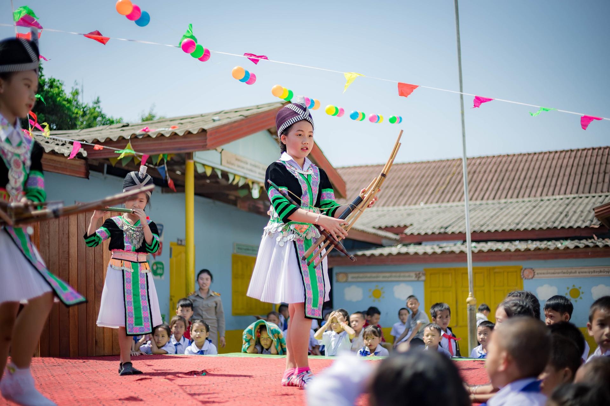

Les Hmong/Hmoob sont un peuple d'Asie originaire des régions montagneuses du sud de la Chine (spécialement la région du Guizhou) au nord du Viêt Nam et du Laos. Ils sont aussi appelés Miao (chinois : 苗 , Miáo), ce qui signifie « riz cru » et désigne depuis longtemps des populations nomades peu intégrées. Les Hmong eux-mêmes emploient souvent la dénomination « montagnards ».

Les Miao sont le cinquième groupe ethnique en termes de population parmi les 56 "nationalités" de Chine. Le recensement chinois de 1989 a estimé leur nombre à plus de sept millions, et celui de 2000 à près de neuf millions1. Les Hmong vivant au Laos représentent 7,9 %2 de la population laotienne, soit environ 438 300 personnes. Ils font partie des 49 ethnies recensées par le gouvernement laotien en 1989. Aujourd'hui, bien que le peuple hmong soit intégré à la vie laotienne (cf le marché du soir de Luang Prabang ou le marché ethnique de Vientiane), une partie non quantifiable de Hmong est réfugiée dans la jungle, dans la zone de Xaysomboun, traquée par les armées laotienne et vietnamienne, pour avoir aidé les Français pendant la guerre d'Indochine puis les Américains pendant la guerre du Viêt Nam. En 2005, ils n'y sont plus que 8 000, contre plus de 30 000 une dizaine d'années plus tôt. Au cours des dernières décennies, une forte population de Hmong a émigré aux États-Unis, en Australie, en Nouvelle-Zélande, au Canada, en Allemagne, au Japon, en Argentine et en France (estimation à 30 000 selon Chô LY, 2004), dont environ 2 000 en Guyane. La plus grande partie vit encore en Asie du Sud-Est : Chine, Viêt Nam, Laos, Thaïlande et Birmanie.